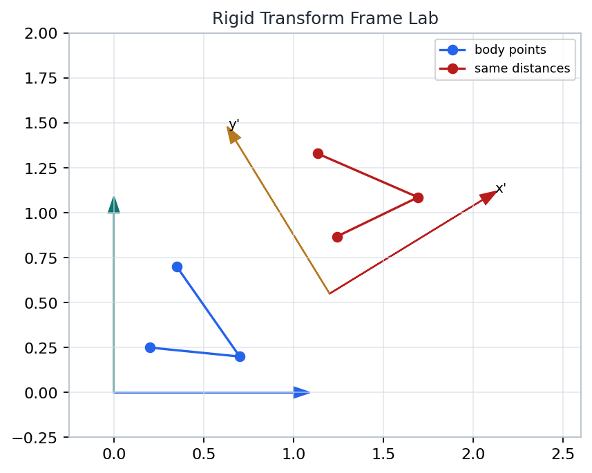
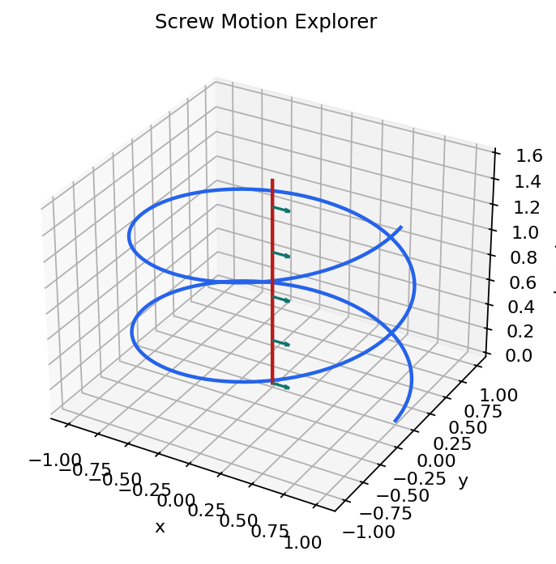
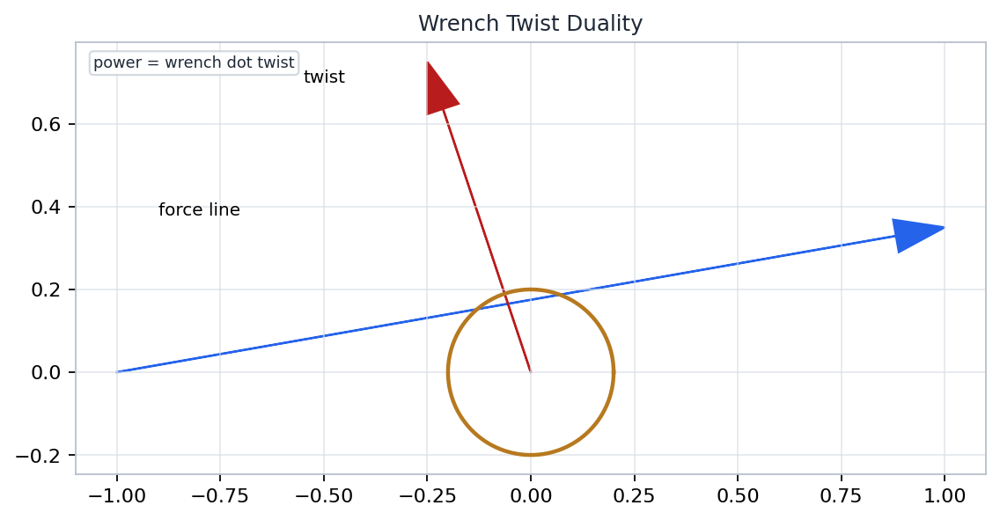

Invariant Object
Rigid geometry survives observer changes.
Group Language
SO(3) and SE(3) organize orientation and pose.
Dual Test
Twist-wrench power is frame independent.
Source span: printed pages 19-80; PDF pages 37-98. Notebook: chapter-02-rigid-body-motion/02-rigid-body-motion.ipynb.
Rigid geometry survives observer changes.
SO(3) and SE(3) organize orientation and pose.
Twist-wrench power is frame independent.
Distances and angles are the invariant data.
Rotations form a noncommutative group.
Pose combines rotation and translation.
Twists, wrenches, adjoints, and power.
For body points \(p_i,p_j\), a rigid motion preserves \(\|p_i-p_j\|\) and dot products.
The same invariant can appear through different coordinate triples in different frames.
\(R_{sb}\) tells how body axes are expressed in the space frame.
\(q_{sb}\) locates the body origin in space coordinates.

Changing the frame changes coordinates, while the marked body geometry remains rigid.
A pose records both where the origin is and how the axes are oriented.
Generated notebook artifact: artifacts/chapter-02/figures/rigid-transform-frame-lab.png
Columns are unit axes and stay mutually perpendicular.
Determinant one keeps a right-handed frame right-handed.
Products and inverses remain rotations, but order matters.
\(\|Rx\|=\|x\|\)
\((Rx)\cdot(Ry)=x\cdot y\)
\((Rx)\times(Ry)=R(x\times y)\)
rotation_det = 1.0
rotation_orthogonality_error = 2.74e-16
Small residuals say the numerical matrix behaves like a rotation, not merely like a 3 by 3 array.
\(\omega\) gives the unit axis, while \(\theta\) gives the signed amount of rotation.
\(\hat{\omega}v = \omega \times v\), so cross products become matrix multiplication.
Minimal coordinates can become ambiguous or ill-conditioned near special rotations.
Usually \(e^{\hat{a}}e^{\hat{b}}\neq e^{\widehat{a+b}}\).
Keep the rotation as the geometric object; use coordinates as local instruments.
One matrix records orientation and origin location.
\(T^{-1}\) changes the observer from space back to body.
Notebook se3_roundtrip_error = 3.93e-17.
\(T_A = T_{\mathrm{translate}}T_{\mathrm{rotate}}\)
Rotate the body, then move the rotated frame.
\(T_B = T_{\mathrm{rotate}}T_{\mathrm{translate}}\)
Move first, then rotate the displacement as part of the frame.

Rotation about an axis and translation along it combine into one rigid displacement.
A twist is the velocity-level description of this screw idea.
Generated notebook artifact: artifacts/chapter-02/figures/screw-motion-explorer.png
\(\omega\) gives the instantaneous axis direction and spin rate.
\(v\) gives the velocity contribution at the chosen frame origin.
The motion is physical; the six coordinates depend on the observer.
The \(\hat{q}R\) block is the correction from moving the point where velocity is observed.
\(V'=\operatorname{Ad}_T V\)
The twist coordinates change with the frame.
\(F'=\operatorname{Ad}_T^{-T}F\)
The wrench uses the matching dual rule.

A force-moment pair \(F\) is dual to a twist because their pairing is power.
If \(V'=\operatorname{Ad}_T V\), then \(F'=\operatorname{Ad}_T^{-T}F\).
Generated notebook artifact: artifacts/chapter-02/figures/wrench-twist-duality.png
Move the same twist through three frames and confirm that the wrench pairing is invariant.
Rigid motion preserves the body's distances, angles, and handedness.
Frames change the six numbers used for poses, twists, and wrenches.
Power \(F^T V\) should survive the paired adjoint/coadjoint update.